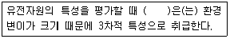
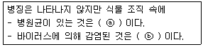
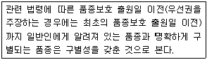
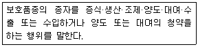
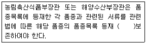

종자기사 (2015-03-08 기출문제)
1과목: 종자생산학
1. 자연 교잡율이 5~25% 정도인 식물은?
- 자가수정 식물
- 타가수정 식물
- 부분타식성 식물
- 내혼계 식물
(정답률: 75%)

2. 화분모세포 10개가 정상적으로 감수분열하면 몇 개의 화분(소포자)을 만들게 되는가?
- 10개
- 20개
- 40개
- 50개
(정답률: 81%)
3. 시금치의 개화성과 채종에 대한 설명으로 옳은 것은?
- F1채종의 원종은 뇌수분으로 채종한다.
- 자가불화합성을 이용하여 F1채종을 한다.
- 자웅이주(雌雄異株)로서 암꽃과 수꽃이 각각 따로 있다.
- 장일성 식물로서 유묘기 때 저온처리를 하면 개화가 억제된다.
(정답률: 68%)
4. 한천배지검정에서 Sodium Hypochlorite(NaCl)를 이용한 종자의 표면 소독시 적정농도와 침지시간으로 가장 적당한 것은?
- 1%, 1분
- 10%, 1분
- 20%, 30분
- 40%, 30분
(정답률: 73%)
5. 배휴면(肧休眠)을 하는 종자를 습한 모래 또는 이끼와 교대로 층상으로 쌓아 두고, 그것을 저온에 두어 휴면을 타파시키는 방법을 무엇이라 하는가?
- 밀폐처리
- 습윤처리
- 층적처리
- 예냉
(정답률: 85%)
6. 종자의 저장성에 대한 설명으로 옳은 것은?
- 종자의 저장성은 저장고에 입고 당시 종자의 질과 저장 전 종자의 생육단계에 의하여 지배된다.
- 종자가 생리적 성숙기에 도달하면 곧바로 기계로 수확하여 저장하는 것이 종자 저장성 향상에 좋다.
- 저장 중 종자의 퇴화용은 동일 작물이라면 소집단별 또는 개체별로 차이를 나타내지 않는다.
- 좋은 저장환경을 갖춘 저장고에 종자를 저장하면 종자의 질이 월등히 향상된다.
(정답률: 63%)
7. 종자세의 평가방법에 대한 설명으로 틀린 것은?
- 저온검사법은 옥수수나 콩에 보편적으로 이용되고 있다.
- 저온발아검사법은 목화에 보편적으로 이용되고 있다.
- 노화촉진검사법은 흡습시키지 않은 종자를 고온·다습한 조건에 처리한 후 적합한 조건에서 발아시키는 방법이다.
- 삼투압검사법은 높은 삼투용액에서는 발아속도가 빨라지고 유근보다 유아가 더 빠르게 출현하는 것을 이용한다.
(정답률: 51%)
8. 상추의 특성을 바르게 설명한 것은?
- 발아온도는 25℃가 알맞다.
- 생육시 30℃ 전후의 고온을 좋아한다.
- 장일조건에서 추대가 촉진된다.
- 20℃ 이하가 되어야 개화한다.
(정답률: 64%)
9. 일대잡종 종자생산을 위한 인공교배에서 제웅이란?
- 개화 전 양친의 암술을 제거하는 작업이다.
- 개화 전 자방친의 꽃밥을 제거하는 작업이다.
- 개화 직후 화분친의 암술을 제거하는 작업이다.
- 개화 직후 양친의 꽃밥을 제거하는 작업이다.
(정답률: 80%)
10. 종자의 발아시험에 쓰이지 않는 온도 조건은?
- 25℃ 항온
- 35℃ 항온
- 15~25℃의 변온
- 20~30℃의 변온
(정답률: 75%)
11. 종자의 발아검사에 대한 설명으로 옳지 않은 것은?
- 순도분석이 끝난 정립(pure seed)을 이용한다.
- 검사시료는 잘 혼합된 시료에서 무작위로 채취한다.
- 100립 4반복으로 치상하는 것이 통례이다.
- 평균 발아율은 소수점이하 한자리까지 나타낸다.
(정답률: 69%)
12. 화곡류에서 질소의 과다시용에 의한 피해로 옳지 않은 것은?
- 병에 걸리기 쉽다.
- 종자의 휴면성을 증가시킨다.
- 과도한 영양생장과 도복의 원인이 된다.
- 종자의 등숙율을 저하시킨다.
(정답률: 66%)
13. 다음 종자의 발육환경 중 일장에 의한 영향은 어떤 것인가?
- 수확 전 발아나 조기발아의 문제가 발생한다.
- 상추종자는 광 휴면성이 둔감해 진다.
- 질소의 용탈과 탈질현상이 일어난다.
- 콩과작물의 경우 경실성과 관련이 있다.
(정답률: 45%)
14. 수확적기로 벼의 수확 및 탈곡시에 기계적 손상을 최소화 할 수 있는 종자 수분함량은?
- 14% 이하
- 17~23%
- 24~30%
- 31% 이상
(정답률: 75%)
15. 종자퇴화(種子退化)의 증상이 아닌 것은?
- 발아율 저하
- 유리지방산 증가
- 종자 침출물 증가
- 호흡 증가
(정답률: 56%)
16. 종자 발아시 지베렐린이나 적색광과 더불어 상승제적(相乘劑的) 역할을 하는 식물호르몬으로 과실의 성숙이나 눈의 휴면과도 가장 관련 있는 것은?
- 옥신
- 과산화수소
- 에틸렌
- 시토키닌
(정답률: 60%)
17. 다음 중 종자의 수명이 가장 긴 종자는?
- 토마토
- 상추
- 당근
- 고추
(정답률: 72%)
18. 정상묘로만 나열된 것은?
- 부패묘, 경 결함묘
- 경 결함묘, 2차 감염묘
- 완전묘, 기형묘
- 기형묘, 부패묘
(정답률: 70%)
19. 종자의 자엽 부위에 양분을 저장하는 무배유(無胚乳)작물로만 나열된 것은?
- 벼, 밀
- 벼, 콩
- 밀, 팥
- 콩, 팥
(정답률: 82%)
20. 종자 퇴화의 직접적인 원인으로 가장 거리가 먼 것은?
- 저장 양분의 고갈
- 저장 단백질의 과다
- 유해 물질의 축적
- 지질의 자동 산화
(정답률: 72%)
2과목: 식물육종학
21. 자연계에서 종작물의 생식방법과 유전변이 출현과의 관계를 가장 바르게 설명한 것은?
- 유성생식 작물은 유전변이를 기대하기 어렵다.
- 타식성 작물이 자식성 작물보다 더 다양한 유전변이가 출현된다.
- 자식성 작물이 타식성 작물보다 더 다양한 유전변이가 출현된다.
- 무성생식 작물은 감수분열과 수정을 통해서 다양한 유전변이가 생긴다.
(정답률: 81%)
22. 다음 ( )안에 가장 적합한 용어는?

- 개화기
- 수량성
- 종자색깔
- 병해충저항성
(정답률: 69%)
23. 벼 유전자원을 수집하는 국제기관은?
- ILRI
- CIP
- IRRI
- CIMMYT
(정답률: 78%)
24. 변이를 일으키는 원인에 따라서 3가지로 구분할 때 가장 옳은 것은?
- 방황변이, 개체변이, 일반변이
- 장소변이, 돌연변이, 교배변이
- 돌연변이, 유전변이, 비유전변이
- 대립변이, 양적변이, 정부변이
(정답률: 75%)
25. 아포믹시스(Apomixis)에 대한 설명이 바른 것은?
- 웅성불임에 의해 종자가 만들어진다.
- 수정과정을 거치지 않고 배가 만들어져 종자를 형성한다.
- 자가불화합성에 의해 유전분리가 심하게 일어난다.
- 세포질불임에 의해 종자가 만들어진다.
(정답률: 78%)
26. 돌연변이 유발원으로 γ선과 X선을 주로 사용하는 이유는?
- 잔류방사능이 있지만 돌연변이가 많이 나오기 때문이다.
- 처리가 까다롭지만 돌연변이 빈도가 높기 때문이다.
- 처리가 쉽고 잔류방사능이 없기 때문이다.
- 처리가 쉽고 에너지가 낮기 때문이다.
(정답률: 74%)
27. 체세포로부터 식물체가 재생되는 현상을 적절하게 설명한 것은?
- 식물의 세포분화능을 이용하는 것이다.
- 세포의 탈분화능을 이용하는 것이다.
- 식물의 기관형성능을 이용하는 것이다.
- 세포의 전체형성능을 이용하는 것이다.
(정답률: 76%)
28. 순계에 대한 설명으로 옳지 않은 것은?
- 순계내의 개체들은 모두 동일한 유전자형을 갖는다.
- 순계내의 개체들은 모두 동형접합체이다.
- 순계내에서의 선발은 효과가 없다.
- 순계내에서의 변이는 유전변이와 환경변이로 구성된다.
(정답률: 55%)
29. 비대립유전자 간 상호작용으로 한 유전자의 작용효과가 다른 자리에 위치한 유전자형의 영향을 받아서 변하는 효과는?
- 상위성 효과
- 초우성 효과
- 부분우성 효과
- 상가적 효과
(정답률: 50%)
30. 포자체형 자가불화합성 식물에서 자가불화합성 관련유전자 조성이 S1S3인 식물을 자방친으로 하고 S1S2를 화분친으로 하여 교배했을 때 불화합이 되는 경우는?
- 유전자 S1이 유전자 S3에 대하여 우성이고, S2가 S1에 대하여 우성일 때
- 유전자 S1이 유전자 S3와 S2에 대하여 각각 열성일 때
- 유전자 S1이 유전자 S3와 S2에 대하여 각각 우성일 때
- 유전자 S1이 유전자 S3와 공우성(共優性)이고, S1이 S2에 대하여 열성일 때
(정답률: 54%)
31. 동질배수체와 이질배수체의 차이점을 가장 잘 설명한 것은?
- 동질배수체 : 동일한 염색체수가 1~2개 증가한 것
이질배수체 : 체세포의 염색체가 1~2개 감소한 것 - 동질배수체 : 염색체수가 동일 게놈단위로 증가한 것
이질배수체 : 다른 게놈의 염색체 1~2개가 첨가된 것 - 동질배수체 : 동일 게놈이 배가되어 있는 배수체
이질배수체 : 다른 게놈이 결합되어 있는 배수체 - 동질배수체 : 동일한 염색체수가 1~2개 증가한 것
이질배수체 : 다른 게놈의 염색체 1~2개가 첨가된 것
(정답률: 78%)
32. 독립유전하는 양성잡종 AaBb 유전자형의 개체를 자식시켰을 때 동형접합 개체의 비율?
- 100%
- 50%
- 25%
- 12.5%
(정답률: 55%)
33. 다음 중 피자식물(속씨식물)의 성숙한 배낭에서 중복수정에 참여하여 배유를 생성하는 것은?
- 난세포
- 조세포
- 반족세포
- 극핵
(정답률: 75%)
34. 우리나라의 녹색혁명을 주도한 벼 품종은?
- IR 8
- 통일벼
- 일품벼
- 대립벼 1호
(정답률: 80%)
35. 체세포의 염색체 구성이 2n+1 일 때 이를 무엇이라 하는가?
- 일염색체(monosomic)
- 삼염색체(trisomic)
- 이질배수체
- 동질배수체
(정답률: 75%)
36. 녹색혁명(green revolution)에 관한 설명 중 옳지 않은 것은?
- 작물 중 밀과 벼에서 최초로 시작되었다.
- 작물의 다수성 품종을 보급하여 획기적으로 생산성이 증대된 것이다.
- 과거 품종보다 키가 커지면서 수량이 증가하게 되었다.
- 다수성 품종들은 높은 생산성을 올리기 위해서 과거 품종보다 더 많은 화학제를 필요로 하게 되었다.
(정답률: 71%)
37. 채소류의 채종재배에서 수확 적기는?
- 황숙기
- 유숙기
- 갈숙기
- 녹숙기
(정답률: 74%)
38. 식물병에 대한 진정 저항성과 동일한 뜻을 가진 저항성은?
- 질적 저항성
- 포장 저항성
- 양적 저항성
- 수평 저항성
(정답률: 61%)
39. 4배체인 AAAA x aaaa의 교잡에서 A가 완전유성이라 할 때 F2에서 우성형질과 열성형질의 분리비는?
- 3 : 1
- 15 : 1
- 9 : 7
- 35 : 1
(정답률: 48%)
40. 육종목표를 효율적으로 달성하기 위한 육종방법을 결정할 때 고려해야 할 사항은?
- 미래의 수요예측
- 농가의 경영규모
- 목표형질의 유전양식
- 품종보호신청 여부
(정답률: 75%)
3과목: 재배원론
41. 벼의 생육 중 냉해에 의한 출수가 가장 지연되는 생육단계는?(오류 신고가 접수된 문제입니다. 반드시 정답과 해설을 확인하시기 바랍니다.)
- 유효분얼기
- 유수형성기
- 감수분열기
- 출수기
(정답률: 49%)
42. 벼에서 백화묘(白化苗)의 발생은 어떤 성분의 생성이 억제되기 때문인가?
- 옥신
- 카로티노이드
- ABA
- NAA
(정답률: 67%)
43. 작물의 채종을 목적으로 재배할 때 작물 퇴화방지를 위한 격리 거리가 가장 먼 것은?
- 벼
- 콩
- 보리
- 배추
(정답률: 66%)
44. 작물의 내열성을 올바르게 설명한 것은?
- 세포내의 유리수가 많으면 내열성이 증대된다.
- 어린 잎보다 늙은 잎이 내열성이 크다.
- 세포의 유지함량이 증가하면 내열성이 감소한다.
- 세포의 단백질 함량이 증가하면 내열성이 감소한다.
(정답률: 67%)
45. 작물에 대한 수해의 설명으로 옳은 것은?
- 화본과 목초, 옥수수는 침수에 약하다.
- 벼 분얼초기는 다른 생육단계보다 침수에 약하다.
- 수온이 높은 것이 낮은 것에 비하여 피해가 심하다.
- 유수가 정체수보다 피해가 심하다.
(정답률: 61%)
46. 개량삼포식농법에 해당하는 작부방식은?
- 자유경작법
- 콩과작물의 순환농법
- 이동경작법
- 휴한농법
(정답률: 68%)
47. 토양수분의 수주 높이가 100cm일 경우 pF 값과 기압은 각각 얼마인가? (순서대로 pF, 기압)
- 1, 0.01
- 2, 0.1
- 3, 1
- 4, 10
(정답률: 61%)
48. 다음 중 T/R율에 관한 설명으로 올바른 것은?
- 감자나 고구마의 경우 파종기나 이식기가 늦어질수록 T/R율이 작아진다.
- 일사가 적어지면 T/R율이 작아진다.
- 질소를 다량시용하면 T/R율이 작아진다.
- 토양함수량이 감소하면 T/R율이 감소한다.
(정답률: 58%)
49. 일반 토양의 3상에 대하여 올바르게 기술한 것은?
- 기상의 분포 비율이 가장 크다.
- 고상의 분포는 50%정도 이다.
- 액상은 가장 낮은 비중을 차지한다.
- 고상은 액체와 기체로 구성된다.
(정답률: 73%)
50. 다음 중에서 중경제초의 이로운 점과 거리가 먼 것은?
- 토양수분의 증발을 경감시킨다.
- 비료의 효과를 증진시킬 수 있다.
- 풍식과 동상해를 경감시킬 수 있다.
- 종자의 발아와 통기가 조장된다.
(정답률: 43%)
51. 우리나라의 벼농사는 대부분이 기계화되어 있는데, 이러한 기계화의 가장 큰 장점은?
- 유기농 재배가 가능하다.
- 농업 노동력과 인건비가 크게 절감된다.
- 화학비료나 농약의 사용을 크게 줄일 수 있다.
- 재배방식의 개선과 농자재 사용을 줄 일 수 있어서 소득이 향상된다.
(정답률: 81%)
52. 작물의 내습성에 관여하는 요인을 잘못 설명한 것은?
- 뿌리의 피층세포가 사열로 되어 있는 것은 직렬로 되어 있는 것 보다 내습성이 약하다.
- 목화한 것은 환원성 유해물질의 침입을 막아서 내습성이 강하다.
- 부정근이 발생력이 큰 것은 내습성이 약하다.
- 뿌리가 황화수소 등에 대하여 저항성이 큰 것은 내습성이 강하다.
(정답률: 55%)
53. 고추의 기원지로 알려진 곳은?
- 중국
- 인도
- 중앙아시아
- 남아메리카
(정답률: 54%)
54. 두류에서 도복의 위험이 가장 큰 시기는 개화기로부터 얼마인가?
- 약 10일간
- 약 20일간
- 약 30일간
- 약 40일간
(정답률: 54%)
55. 다음 중에서 배유종자가 아닌 작물은?
- 보리
- 율무
- 옥수수
- 녹두
(정답률: 65%)
56. 유기재배시 토양개량과 작물생육을 위하여 사용 가능한 물질로 거리가 먼 합성석회는?
- 채분
- 석회석
- 소석회
- 석회소다 염화물
(정답률: 46%)
57. 식물의 광합성 속도에는 이산화탄소의 농도 뿐 아니라 광의 강도도 관여를 하는데, 다음 중 광이 약할 때에 일어나는 일반적인 현상은?
- 이산화탄소 보상점과 포화점이 다 같이 낮아진다.
- 이산화탄소 보상점과 포화점이 다 같이 높아진다.
- 이산화탄소 보상점이 높아지고 이산화탄소 포화점은 낮아진다.
- 이산화탄소 보상점이 낮아지고 이산화탄소 포화점은 높아진다.
(정답률: 56%)
58. 식물체의 부위 중 내열성이 가장 약한 곳은?
- 눈(芽)
- 유엽(幼葉)
- 완성엽(完成葉)
- 중심주(中心柱)
(정답률: 45%)
59. 다음 중 단일상태에서 화성이 유도·촉진되는 식물은?
- 보리
- 감자
- 배추
- 들깨
(정답률: 59%)
60. 옥신의 사용 설명으로 틀린 것은?
- 국화 삽목 시 발근을 촉진한다.
- 앵두나무 접목시 접수와 대목의 활착을 촉진한다.
- 파인애플의 화아분화를 촉진한다.
- 사과나무의 과경 이층(離層)형성을 촉진한다.
(정답률: 59%)
4과목: 식물보호학
61. 각 작물에 있어서 수확량에 관계없는 잡초의 존재와 양을 가리키는 용어는?
- 잡초의 허용한계
- 잡초의 군락진단
- 잡초의 진단기준
- 잡초의 방제체계
(정답률: 74%)
62. 접촉형 제초제에 대한 설명으로 옳지 않은 것은?
- 시마진, PCP 등이 있다.
- 효과가 곧바로 나타난다.
- 주로 발아 후의 잡초를 제거하는데 사용된다.
- 약제가 부착된 곳의 살아있는 세포가 파괴된다.
(정답률: 74%)
63. 병해충 발생 예찰을 위한 조사방법 중 정점조사의 목적으로 옳지 않은 것은?
- 방제 적기 결정
- 방제 범위 결정
- 방제 여부 결정
- 연차간 발생장소 비교
(정답률: 54%)
64. 다음 ( ) 안에 들어갈 내용으로 옳은 것은?

- ⓐ 기생식물, ⓑ 감염식물
- ⓐ 보균식물, ⓑ 보독식물
- ⓐ 감염식물, ⓑ 잠재감염
- ⓐ 은화식물, ⓑ 기주식물
(정답률: 80%)
65. 배추 흰무늬병에 대한 설명으로 옳지 않은 것은?
- 공기로 전염한다.
- 시비량의 부족은 병 유발을 촉진한다.
- 병원균은 주로 포자상태로 지표면에서 월동한다.
- 잎에 발생하고 잎 표면에 갈색반점이 생기며 나중에 회백색, 백색 병반을 형성한다.
(정답률: 44%)
66. 잡초와 작물의 경쟁요인이 아닌 것은?
- 광선
- 양분
- 토양수분
- 토양산도
(정답률: 80%)
67. 1차 전염원에 대한 설명으로 옳은 것은?
- 균류에만 해당하는 용어이다.
- 병원성이 가장 강한 전염원이다.
- 도전 바이러스에 앞서 감염된 바이러스이다.
- 월동이 끝난 병원체가 최초로 감염하는 전염원이다.
(정답률: 70%)
68. 맥류 줄기녹병에 대한 설명으로 옳은 것은?
- 종자 전염한다.
- 병원균의 race가 있다.
- 불완전균류에 의한 병이다.
- Gymnosporangium 속균에 의하여 발생한다.
(정답률: 69%)
69. 유충기에 땅 속에서 수목 뿌리나 부식물을 먹고 자라며, 성충이 되어 지상에 나와 밤나무 잎이나 농작물 새싹을 가해하는 해충은?
- 응애류
- 매미류
- 하늘소류
- 풍뎅이류
(정답률: 50%)
70. 생활사에 따른 잡초의 분류에서 1년생 잡초는?
- 쇠털골
- 바늘골
- 토끼풀
- 쇠뜨기
(정답률: 40%)
71. 25% 농도의 유제를 1000배로 희석해서 10a당 300L를 살포하여 해충을 방제하려고 할 때의 유제의 소요량은?
- 75mL
- 200mL
- 300mL
- 333mL
(정답률: 73%)
72. 다음 중 종자소독제가 아닌 것은?
- 테부코나졸 유제
- 프로클로라즈 유제
- 디노테퓨란 수화제
- 베노밀·티람 수화제
(정답률: 42%)
73. 완전변태를 하는 곤충으로 나열된 것은?
- 바퀴목 – 매미목
- 파리목 – 나비목
- 메뚜기목 – 풀잠자리목
- 총채벌레목 – 딱정벌레목
(정답률: 80%)
74. 곤충의 배설태인 요산을 합성하는 장소는?
- 지방체
- 알라타체
- 편도세포
- 앞가슴샘
(정답률: 60%)
75. 잡초의 발생시기에 따른 분류로 옳은 것은?
- 봄형 잡초
- 2년형 잡초
- 여름형 잡초
- 가을형 잡초
(정답률: 68%)
76. 침입에 대한 설명으로 옳지 않은 것은?
- 맥류 흰가루병균은 기공침입을 한다.
- 고구마 무름병균은 상처침입만 한다.
- 토마토 모자이크병은 각피침입을 한다.
- 오이 덩굴쪼김병균은 뿌리의 각피를 뚫고 침입한다.
(정답률: 50%)
77. 컨테이너로 수입된 농사눌의 검역과정에서 해충이 발견되었다. 발견된 해충을 박멸하기 위해 사용하는 약제의 가장 적합한 종류는?
- 훈증제
- 접촉제
- 유인제
- 소화중독제
(정답률: 83%)
78. 벌레혹(충영)을 만드는 해충으로 옳지 않은 것은?
- 솔잎혹파리
- 밤나무혹벌
- 아까시잎혹파리
- 복숭아혹진딧물
(정답률: 68%)
79. 병원체가 생성한 독소에 감염된 식물을 사람이나 동물이 섭취한 경우 독성을 유발할 수 있는 병은?
- 벼 도열병
- 고추 탄저병
- 채소류 노균병
- 맥류 붉은곰팡이병
(정답률: 76%)
80. 벼 도열병균을 생장단계별로 볼 때에 약제에 대한 저항력이 가장 강한 시기는?
- 균사 시기
- 부착기 형성기
- 분생포자 발아시기
- 분생포자 형성기
(정답률: 45%)
5과목: 종자관련법규
81. 대통령령이 정하는 시설을 갖추어 주된 생산시설의 소재지에 종자업을 등록하려고 한다. 다음 중 등록신청서 제출 대상으로 옳지 않은 것은?
- 군수
- 구청장
- 도지사
- 특별자치시장
(정답률: 50%)
82. 국가품종목록의 등재 대상 작물에 해당되지 않는 것은?
- 벼
- 콩
- 고구마
- 보리
(정답률: 70%)
83. ‘종자산업’의 범주에 속하지 않는 것은?
- 종자의 폐기
- 종자의 육성
- 종자의 유통
- 종자의 전시
(정답률: 64%)
84. 품종보호권 또는 전용실시권을 침해하였을 경우에 해당하는 벌칙 기준은?
- 3년 이하의 징역 또는 1천만원 이하의 벌금
- 4년 이하의 징역 또는 2천만원 이하의 벌금
- 5년 이하의 징역 또는 3천만원 이하의 벌금
- 7년 이하의 징역 또는 1억원 이하의 벌금
(정답률: 76%)
85. 종자관리사의 자격기준에 맞지 않는 것은?
- 종자기술사 자격취득자
- 종자기사 자격을 취득한 사람으로서 자격 취득 전후의 기간을 포함하여 종자업무 또는 이와 유사한 업무에 1년 이상 종사자
- 종자산업기사 자격을 취득한 사람으로서 자격 취득 전후의 기간을 포함하여 종자업무 또는 이와 유사한 업무에 2년 이상 종사자
- 버섯종균기능사 자격을 취득한 사람으로서 자격 취득 전후의 기간을 포함하여 버섯 종균업무 또는 이와 유사한 업무에 5년 이상 종사자
(정답률: 76%)
86. 시장·군수는 종자업 등록을 취소하거나 6개월 이내의 기간을 정하여 그 영업의 정지를 명할 수 있다. 그 중 등록을 취소하여야 하는 경우에 해당되는 것은?(오류 신고가 접수된 문제입니다. 반드시 정답과 해설을 확인하시기 바랍니다.)
- 종자업자가 종자관리사를 두지 아니한 경우
- 거짓이나 그 밖의 부정한 방법으로 종자업 등록을 한 경우
- 수출·수입이 제한된 종자를 수출·수입하거나, 수입되어 국내유통이 제한된 종자를 국내에 유통한 경우
- 종자업 등록을 한 날부터 1년 이내에 사업을 시작하지 아니하거나 정당한 사유 없이 1년 이상 계속하여 후업한 경우
(정답률: 42%)
87. 수입적응성시험을 실시하는 기관으로 옳지 않은 것은?
- 한국생약협회
- 농업협동조합중앙회
- 전국버섯생산자협회
- 농업기술실용화재단
(정답률: 61%)
88. 일반인에게 알려져 있는 품종에 해당하지 않는 것은?

- 품종보호를 받고 있는 품종
- 품종목록에 등재되어 있는 품종
- 농민이 채종하여 사용하는 품종
- 유통되고 있는 품종
(정답률: 68%)
89. 포장검사 및 종자검사에 대한 설명으로 옳지 않은 것은?
- 포장검사에 따른 종자검사 방법은 전수조사로만 실시한다.
- 국가보증이나 자체보증 종자를 생산하려는 자는 종자검사의 결과에 대하여 이의가 있으면 재검사를 신청할 수 있다.
- 국가보증이나 자체보증 종자를 생산하려는 자는 다른 품종 또는 다른 계통의 작물과 교잡되는 것을 방지하기 위한 공동부령으로 정하는 포장 조건을 준수하여야 한다.
- 국가보증이나 자체보증을 받는 종자를 생산하려는 자는 농림축산식품부장관, 해양수산부장관 또는 종자관리사로부터 채종 단계별로 1회 이상 포장검사를 받아야 한다.
(정답률: 75%)
90. 품종명칭으로 등록 가능한 것은?
- 숫자로만 표시
- 기호로만 표시
- 당해 품종의 수확량만을 표시
- 당해 품종의 육성자 이름을 표시
(정답률: 64%)
91. 유통종자의 품질표시 사항에 해당되지 않는 것은?
- 육성자명
- 품종의 명칭
- 종자의 발아율
- 재배 시 특히 주의할 사항
(정답률: 61%)
92. 품종보호권자는 그 품종보호권의 존속기간 중에서 농림축산식품부장관 또는 해양수산부장관에게 품종보호료를 얼마 주기로 납부하여야 하는가?
- 6개월마다
- 매년
- 2년마다
- 3년마다
(정답률: 75%)
93. 다음 [보기]의 설명에 해당하는 용어는?

- 집행
- 실시
- 실행
- 성능
(정답률: 72%)
94. 감자 종자검사 기준 중 특정병에 해당하는 것은?
- 역병
- 무름병
- 둘레썩음병
- 줄기마름병
(정답률: 53%)
95. 경기도가 생산하는 종자용 보리에 해당하는 보증은?
- 민간보증
- 농협보증
- 지방자치단체 보증
- 국가보증 또는 자체보증
(정답률: 63%)
96. 과태료 처분대상에 해당하지 않는 것은?
- 종자업 등록을 하지 아니하고 종자업을 한 자
- 종자의 보증과 관련된 검사서류를 보관하지 아니한 자
- 신고되지 않은 품종명칭을 사용하여 종자를 판매하거나 보급한 경우
- 유통중인 종자에 대한 관계공무원의 조사 또는 수거를 거부·방해 또는 기피한 자
(정답률: 40%)
97. 종자산업법에서 정의한 “종자”가 아닌 것은?
- 증식용 씨앗
- 산업용 화훼
- 재배용 묘목
- 양식용 영양체
(정답률: 63%)
98. 종자관리사의 행정처분에 관하여 옳은 것은?
- 직무를 게을리 한 경우 2년 이내의 기간을 정하여 자격을 정지시킬 수 있다.
- 직무를 게을리 한 경우 3년 이내의 기간을 정하여 자격을 정지시킬 수 있다.
- 위반행위에 대하여 정상 참작사유가 있는 경우 업무정지 기간의 3분의 1까지 경감하여 처분할 수 있다.
- 위반행위가 둘 이상인 경우로서 그에 해당하는 각각의 처분기준이 다른 경우에는 그 중 무거운 처분기중을 적용한다.
(정답률: 58%)
99. 품종목록 등재서류의 설명 중 ( )안에 적합한 것은?

- 유효기간 동안
- 유효기간 만료 후 6개월까지
- 유효기간 만료 후 1년까지
- 유효기간 만료 후 3년까지
(정답률: 58%)
100. 품종보호권을 침해한 자에 대하여 품종보호권자 또는 전용실시권자가 취할 수 있는 법적 수단으로 옳지 않은 것은?
- 침해금지 청구
- 무효심판 청구
- 손해배상 청구
- 신용회복 청구
(정답률: 52%)